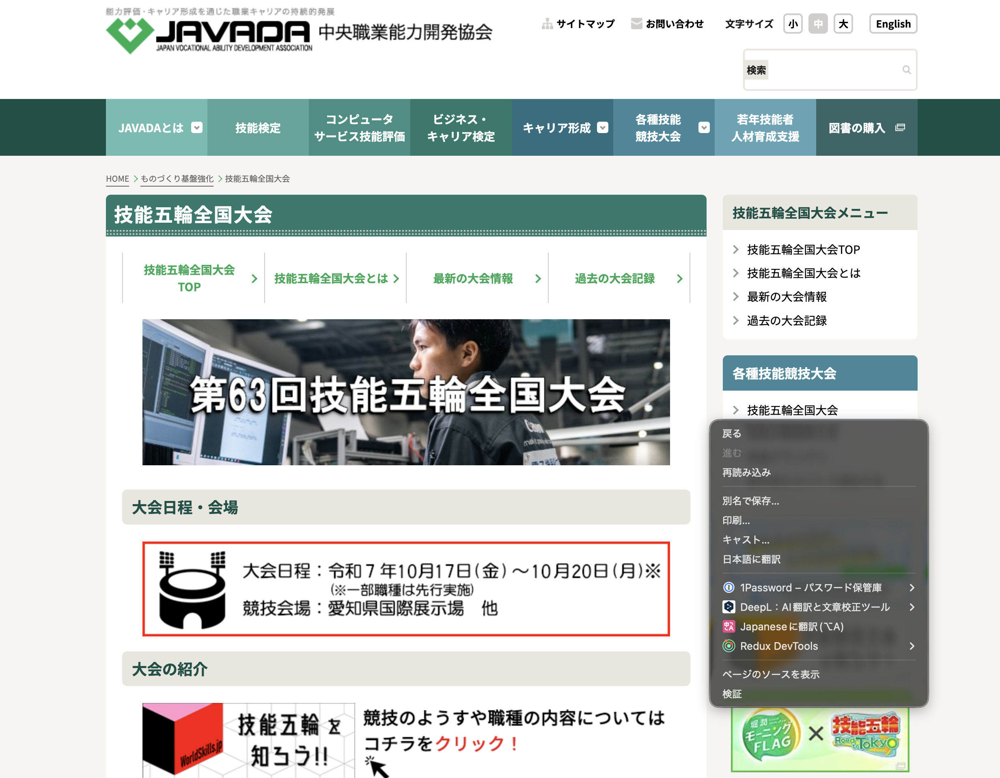
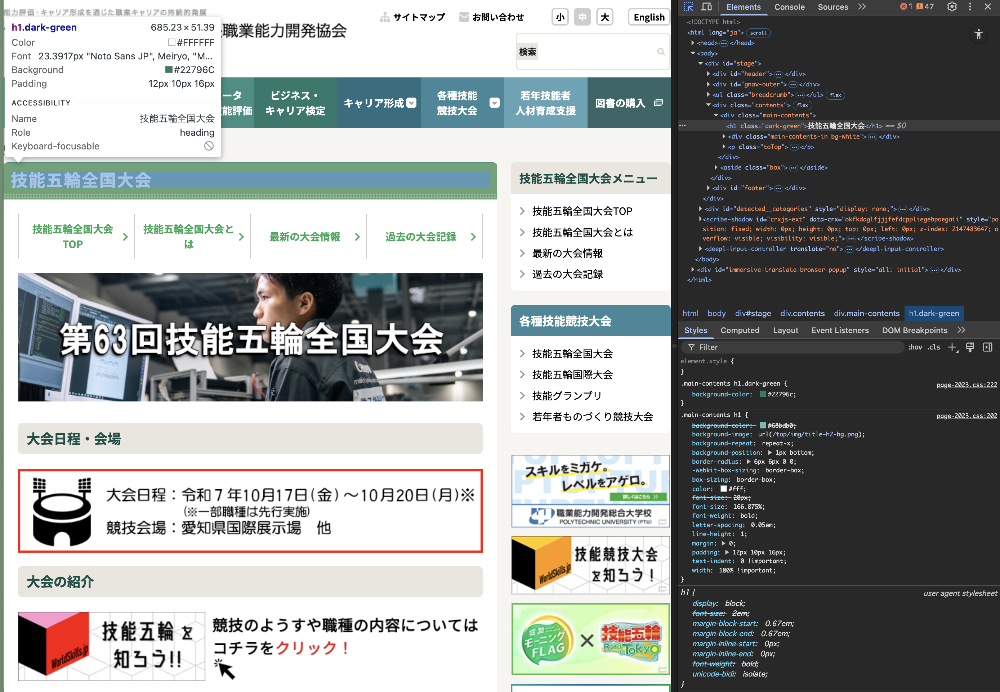
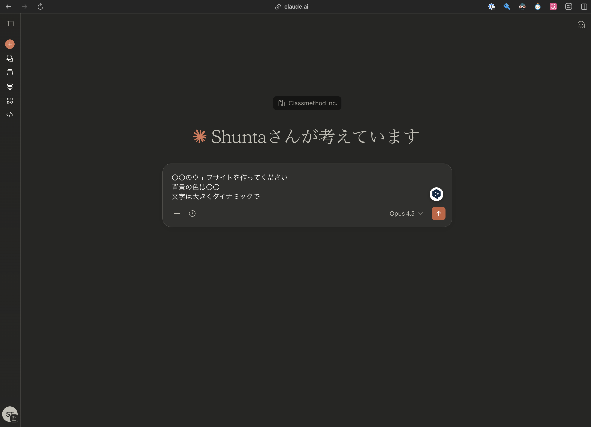
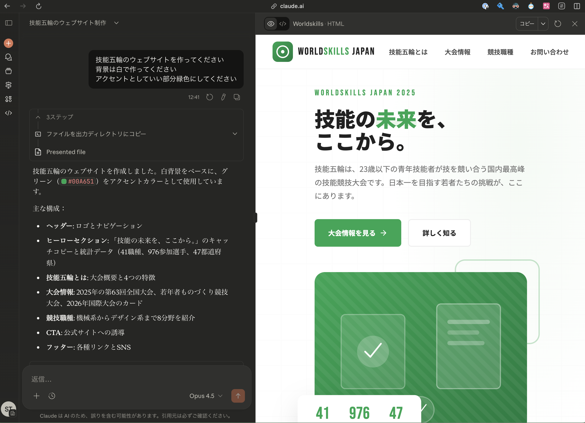

2026年1月11日（日）13:00〜16:00
名古屋プライムセントラルタワー 名古屋駅前店 13階 第1会議室
名古屋市西区名駅2丁目27-8
梅田聖泰さん（株式会社ナスク）
川口博敬さん（川口木工所）
井本和花さん（有限会社佐藤木型製作所）
戸田駿太さん（クラスメソッド株式会社）
建具は小学生向け、ウェブデザインは中学生向けの職人体験を実施。それぞれの内容を通じてものづくりへの興味や技能について学ぶイベントです。
今日は「ウェブサイトがどうやって作られているのか」を学び、実際に自分でウェブサイトやアプリを作ってみましょう！
体験中に気になったことや感想があれば、いつでもSlidoから送ってください。匿名で投稿できるので、気軽にどうぞ！
以下の3つのツールを使います。それぞれクリックして開いておきましょう。
みなさんが普段見ているウェブサイトは、HTML、CSS、JavaScriptという3つの言語で作られています。
下のスライドで詳しく解説しています。
実は、どんなウェブサイトでも「中身」を見ることができます。ブラウザのDevTools（開発者ツール）を使うと、そのウェブサイトがどんなコードで作られているかがわかります。
キーボードで F12 キーを押すか、右クリック →「検証」で開けます。いろんなウェブサイトの中身を覗いてみましょう！
実際のコードを見てみましょう。下のリンクからCodePenを開くと、HTML・CSS・JavaScriptのコードとその結果を同時に確認できます。

右クリック →「検証」でDevToolsを開けます

DevToolsの画面。左にウェブサイト、右にHTMLとCSSのコードが表示されます
いよいよ実践です！ClaudeというAIを使って、自分だけのウェブサイトやアプリを作ってみましょう。
「こんなウェブサイトを作って」「こんなゲームが欲しい」など、日本語でお願いするだけでコードを書いてくれます。

Claudeに日本語でお願いを入力します。例：「〇〇のウェブサイトを作ってください」

Claudeがウェブサイトを作ってくれました！右側にプレビューが表示されます
以前、高校生への講演で参加者がAIを使って作ったアプリの例はこちら：
作ったウェブサイトやアプリができたら、ぜひ提出してください！みんなの作品を後で見られるようにします。
提出の手順：
※ 複数作品を作った場合は、何度でも提出してOKです！